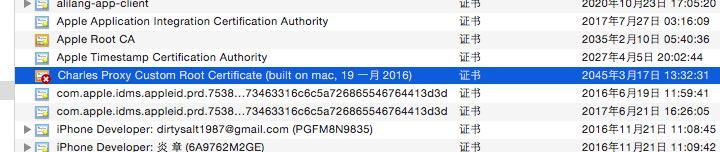
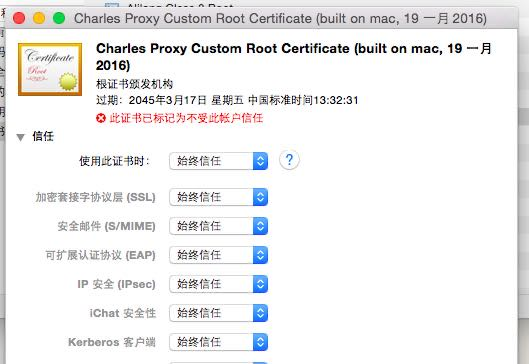

mac根证书信任
前几天使用charles做https proxy, 以便分析https请求。要做https proxy，就要安装根证书。按照charles help的介绍完成安装之后，keychain access里面显示是这样的状态

此时这个根证书并不被系统所信任，所以如果这样去访问https站点的话，请求可能会被断开。为了让这个根证书被信任，点击这个证书，选择始终信任这个证书即可。

ps: charles做抓包分析确实方便，支持搜索请求和响应内容，支持各种形式展现响应等功能。购买它好像花了30$, 但是物有所值。